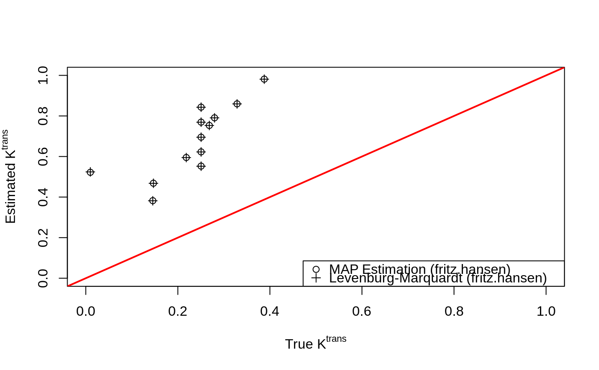

dcemri.map-methods.RdMaximum-a-posteriori (MAP) estimation for single compartment models is performed using literature-based or user-specified arterial input functions.
dcemri.map(conc, ...) # S4 method for array dcemri.map( conc, time, img.mask, model = "extended", aif = NULL, user = NULL, ab.ktrans = c(0, 1), ab.kep = ab.ktrans, ab.vp = c(1, 19), ab.tauepsilon = c(1, 1/1000), maxit = 5000, samples = FALSE, multicore = FALSE, verbose = FALSE, ... )
| conc | Matrix or array of concentration time series (last dimension must be time). |
|---|---|
| ... | Additional parameters to the function. |
| time | Time in minutes. |
| img.mask | Mask matrix or array. Voxels with |
| model | is a character string that identifies the type of compartmental model to be used. Acceptable models include: Tofts & Kermode AIF convolved with single compartment model Weinmann model extended with additional vascular compartment (default) Extended model using Orton's exponential AIF Kety model using Orton's exponential AIF Extended model using Orton's raised cosine AIF Kety model using Orton's raised cosine AIF |
| aif | is a character string that identifies the parameters of the type
of arterial input function (AIF) used with the above model. Acceptable
values are: |
| user | Vector of AIF parameters. For Tofts and Kermode: \(a_1\), \(m_1\), \(a_2\), \(m_2\); for Orton et al.: \(A_b\), \(\mu_b\), \(A_g\), \(\mu_g\). |
| ab.ktrans | Mean and variance parameter for Gaussian prior on \(\log(K^{trans})\). |
| ab.kep | Mean and variance parameter for Gaussian prior on \(\log(k_{ep})\). |
| ab.vp | Hyper-prior parameters for the Beta prior on \(v_p\). |
| ab.tauepsilon | Hyper-prior parameters for observation error Gamma prior. |
| maxit | The maximum number of iterations for the optimization procedure. |
| samples | If |
| multicore | If |
| verbose | Logical variable (default = |
Parameter estimates and their standard errors are provided for the
masked region of the multidimensional array. The multi-dimensional arrays
are provided in nifti format.
They include:
Transfer rate from plasma to the extracellular, extravascular space (EES).
Rate parameter for transport from the EES to plasma.
Fractional occupancy by EES (the ratio between ktrans and kep).
Fractional occupancy by plasma.
The residual sum-of-squares from the model fit.
Acquisition times (for plotting purposes).
Implements maximum a posteriori (MAP) estimation for the Bayesian model in Schmid et al. (2006).
Schmid, V., Whitcher, B., Padhani, A.R., Taylor, N.J. and Yang, G.-Z. (2006) Bayesian methods for pharmacokinetic models in dynamic contrast-enhanced magnetic resonance imaging, IEEE Transactions on Medical Imaging, 25 (12), 1627-1636.
dcemri.lm, dcemri.bayes
data("buckley") xi <- seq(5, 300, by=5) img <- array(t(breast$data)[,xi], c(13,1,1,60)) mask <- array(TRUE, dim(img)[1:3]) time <- buckley$time.min[xi] ## MAP estimation with extended Kety model and Fritz-Hansen default AIF fit.map.vp <- dcemri.map(img, time, mask, aif="fritz.hansen") ## Nonlinear regression with extended Kety model and Fritz-Hansen default AIF fit.lm.vp <- dcemri.lm(img, time, mask, aif="fritz.hansen") plot(breast$ktrans, fit.map.vp$ktrans, xlim=c(0,1), ylim=c(0,1), xlab=expression(paste("True ", K^{trans})), ylab=expression(paste("Estimated ", K^{trans})))legend("bottomright", c("MAP Estimation (fritz.hansen)", "Levenburg-Marquardt (fritz.hansen)"), pch=c(1,3))
## MAP estimation with Kety model and Fritz-Hansen default AIF fit.map <- dcemri.map(img, time, mask, model="weinmann", aif="fritz.hansen") ## Nonlinear regression with Kety model and Fritz-Hansen default AIF fit.lm <- dcemri.lm(img, time, mask, model="weinmann", aif="fritz.hansen") cbind(breast$kep, fit.lm$kep[,,1], fit.lm.vp$kep[,,1], fit.map$kep[,,1], fit.map.vp$kep[,,1])#> [,1] [,2] [,3] [,4] [,5] #> [1,] 0.32355345 0.2348731 0.2348731 0.2356731 0.2356962 #> [2,] 0.48521013 0.4167250 0.4167250 0.4170607 0.4170742 #> [3,] 0.55671514 0.4979371 0.4979372 0.4981651 0.4981680 #> [4,] 0.59642650 0.5438920 0.5438921 0.5440587 0.5440795 #> [5,] 0.62161139 0.5734775 0.5734776 0.5736243 0.5736333 #> [6,] 0.02202843 2.2508666 2.2509156 2.2398360 2.2396892 #> [7,] 0.32664921 0.3567631 0.3567634 0.3572666 0.3572627 #> [8,] 0.73047326 0.6098186 0.6098180 0.6101053 0.6101285 #> [9,] 0.86170469 0.6946350 0.6946319 0.6948689 0.6949021 #> [10,] 0.55671514 0.4294708 0.4294700 0.4301810 0.4302156 #> [11,] 0.55671514 0.4650526 0.4650528 0.4653740 0.4653682 #> [12,] 0.55671514 0.5278610 0.5278610 0.5281173 0.5281034 #> [13,] 0.55671514 0.5540183 0.5540182 0.5543170 0.5543132cbind(breast$ktrans, fit.lm$ktrans[,,1], fit.lm.vp$ktrans[,,1], fit.map$ktrans[,,1], fit.map.vp$ktrans[,,1])#> [,1] [,2] [,3] [,4] [,5] #> [1,] 0.145599052 0.3817053 0.3817053 0.3822287 0.3822429 #> [2,] 0.218344559 0.5947945 0.5947945 0.5950718 0.5950952 #> [3,] 0.250521815 0.6951413 0.6951414 0.6953527 0.6953499 #> [4,] 0.268391926 0.7530097 0.7530098 0.7531700 0.7531903 #> [5,] 0.279725126 0.7906144 0.7906145 0.7907517 0.7907595 #> [6,] 0.009912791 0.5241719 0.5241820 0.5221588 0.5221473 #> [7,] 0.146992146 0.4680227 0.4680229 0.4683815 0.4683723 #> [8,] 0.328712966 0.8593235 0.8593229 0.8596005 0.8596348 #> [9,] 0.387767110 0.9811911 0.9811879 0.9814133 0.9814754 #> [10,] 0.250521815 0.5521834 0.5521828 0.5527387 0.5527606 #> [11,] 0.250521815 0.6226405 0.6226407 0.6229096 0.6229033 #> [12,] 0.250521815 0.7692656 0.7692656 0.7695114 0.7694966 #> [13,] 0.250521815 0.8430926 0.8430925 0.8434068 0.8433965